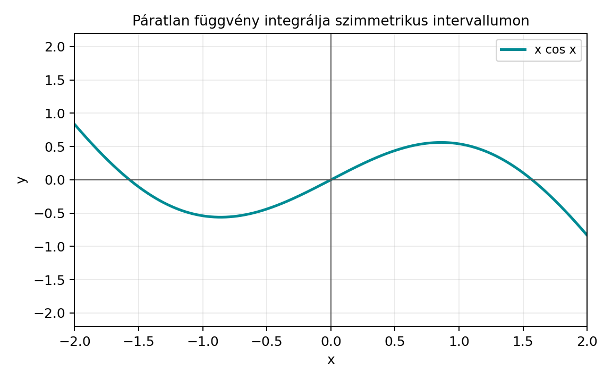

16.1 Határozott integrál
helyettesítéssel és parciálisan
16.1.1 Motiváció
Tegyük fel, hogy egy váltakozó áramú ellenállás feszültsége és árama
azonos fázisú:
A pillanatnyi teljesítmény
A fizikai valóságban a villanyszámlán
és a berendezések adattábláján nem a pillanatnyi, hanem az átlagos
teljesítményt használjuk. Ahhoz az egy periódusra vett
határozott integrált kell
kiszámítanunk. A primitív függvény megkeresése után behelyettesíthetünk,
de a határozott integrálok sokszor gyorsabban és biztonságosabban
számíthatók, ha a helyettesítésnél a határokat is azonnal átszámítjuk,
illetve ha a parciális integrálást közvetlenül az adott határok között
végezzük. Ebben az alfejezetben ezeket a technikákat és a szimmetriából
adódó egyszerűsítéseket tanuljuk meg.
16.1.2 Szemléletes kép
Az alábbi ábra az
függvényt mutatja a
intervallumon. A függvény páratlan, ezért a negatív oldallal vett
terület és a pozitív oldallal vett terület egymást kioltja; az
előjeles integrál nulla. A geometriai területhez nem
elég az előjeles integrált nézni, mert ott a területet mindig pozitívnak
tekintjük.

Páratlan függvény integrálja szimmetrikus
intervallumon - Az y = x cos x függvény páratlan; a (−2,2) intervallumra
vett előjeles integrál 0, mert a negatív és pozitív terület kioltja
egymást.
16.1.3 Helyettesítés határozott
integrálban
A határozatlan integrálásnál megismert helyettesítés a határozott
integrálban is használható. A legfontosabb különbség, hogy a határokat
is át kell számítani az új változóra.
Tétel. (Helyettesítés határozott integrálban.) Ha
folytonos az
intervallumon, és
folytonos a
halmazon, akkor
Bizonyítás. Legyen
az
egy primitív függvénye. A láncszabály szerint
Ezért a Newton–Leibniz-formula szerint
az egyenlőség bal oldala
A jobb oldal ugyanez a
Newton–Leibniz-formula miatt:
A két oldal tehát egyenlő. ∎
A tétel akkor is érvényes, ha
csökkenő, vagyis
.
Ilyenkor a határozott integrál iránya megfordul.
16.1.3.1 Kidolgozott példa:
Legyen
A határokat átszámítjuk:
Így
Ellenőrzésként a primitív függvényt is
használhatjuk:
deriváltja
,
és a behelyettesítés ugyanezt az eredményt adja.
16.1.3.2 Csökkenő helyettesítés és
előjel
Számítsuk ki az
integrált. Legyen
A határok:
Ezzel
Figyeljünk a negatív előjelre: a
egyenlőség miatt az
kifejezést
-ként
írjuk fel. Ha ezt elhagyjuk, az eredmény előjele rossz lesz.
Válasszunk
-et
úgy, hogy a
tényező megjelenjen az integrandusban.
Számítsuk ki
-et,
és fejezzük ki az egész integrandust
és
segítségével.
Számítsuk át a határokat:
-ból
,
-ből
.
Írjuk fel az új határozott integrált, és számítsuk ki. Ha a felső
határ kisebb, használjuk a
azonosságot, vagy egyszerűen a Newton–Leibniz-formulát negatív irányban
is alkalmazzuk.
Tétel. (Parciális integrálás határozott
integrálban.) Ha
és
folytonos
-n,
akkor
Bizonyítás. A szorzat deriválási szabálya szerint
Mindkét oldalt integrálva
-tól
-ig:
Ebből az egyenletből kivonva a második
tagot kapjuk a tételt. ∎
16.1.4.1 Kidolgozott példa:
Legyen
Akkor
A parciális integrálás formulája
szerint
A második határozott integrál:
Az első tag:
Ezért az integrál értéke
.
Ha fordítva választottunk volna, azaz
-et
és
-et,
akkor az integrál nem egyszerűsödött volna.
16.1.4.2 Ismételt parciális
integrálás
Ha az integrandusban
és egy olyan függvény szerepel, amelynek a deriváltja egyszerűbb, akkor
a parciális integrálást többször is alkalmazhatjuk. Erre épül a
Taylor-formula integrálmaradéka is.
16.1.5 Páros, páratlan és
periodikus függvények integrálja
Definíció. Az
függvény páros, ha minden
-re
,
és páratlan, ha minden
-re
.
Tétel. (Szimmetriaszabályok.) Legyen
folytonos a
intervallumon.
Ha
páros, akkor
Ha
páratlan, akkor
Bizonyítás. Bontsuk fel az integrált:
Az első integrálban helyettesítsünk
-et,
azaz
,
.
A határok:
Ezzel
Ha
páros, akkor
,
így az első integrál
,
tehát az összeg
.
Ha
páratlan, akkor
,
ezért az első integrál
,
tehát a két tag kioltja egymást. ∎
Például
mert
páratlan,
páros, szorzatuk páratlan. Ugyanakkor
amelyet elemi függvényekkel nem tudunk
zárt alakban megadni, de a szimmetria miatt csak a
intervallumon kell numerikusan integrálnunk.
Tétel. (Periodikus függvény integrálja.) Ha
folytonos az
-en
és
-vel
periodikus, azaz
minden
-re,
akkor bármely
számra
Bizonyítás. Az additivitás szerint
Az utolsó integrálban legyen
,
ekkor
,
és a periodicitás miatt
.
A határok:
,
.
Ezért
Az első tag
,
így az első és az utolsó tag kioltja egymást, marad
.
∎
Például
periódusa
,
ezért
A periodicitást gyakran alkalmazzuk a
Fourier-sorok együtthatóinak kiszámításakor.
Továbbvitt eredmény. A páros/páratlan
szimmetriaszabályt és a periodikus integrál tulajdonságát közvetlenül
használjuk a Fourier-együtthatók és a komplex
alak alfejezetben, amikor páros vagy páratlan jelek
Fourier-együtthatóit egyszerűsítjük.
16.1.6 A Taylor-formula
integrálmaradéka
A parciális integrálás ismételt alkalmazásával levezethetjük a
Taylor-formula egyik pontos maradéktagját.
Tétel. (Taylor-formula integrálmaradékkal.) Ha
folytonos az
és
közötti intervallumon, akkor
ahol
Bizonyítási terv. Az állítást
szerinti teljes indukcióval bizonyítjuk. Az
eset egyszerűen a Newton–Leibniz-formula. Az indukciós lépésben a már
feltételezett maradéktagban parciálisan integrálunk, és így megjelenik a
Taylor-polinom következő tagja.
Bizonyítás.
-ra:
tehát
.
Tegyük fel, hogy az állítás
-re
igaz, azaz
Az integrálban alkalmazzunk parciális
integrálást a következő választással:
Ekkor
Így
A
határon a szögletes zárójeles tag nulla, mert
.
A
határon az érték
A második tag pedig az előjel miatt
Ezért
A Taylor-polinom rekurziójából tudjuk,
hogy
tehát az összehasonlításból éppen az
integrálmaradék formuláját kapjuk. ∎
Továbbvitt eredmény. Ezt az integrálmaradékot
használjuk a Taylor-sorok konvergenciája és
analitikus függvények alfejezetben, amikor azt vizsgáljuk, hogy egy
függvény Taylor-sora ténylegesen visszaadja-e a függvényt.
16.1.7 Valós életbeli alkalmazás:
váltakozó áram effektív értéke (RMS)
Az alfejezet elején felírt váltakozó áramú teljesítményt most
kiszámítjuk. Legyen a periódus
A pillanatnyi teljesítményt a
formulával írjuk fel. Az átlagos
teljesítmény definíciója
A
kifejezést a fél-szög azonossággal átalakítjuk:
Ezért
Integrálva:
és
mert a szinusz periódusos és a
határokon azonos. Tehát
Így
A váltakozó feszültség effektív értéke (RMS, root
mean square) az
formulával definiálható. Szinuszos jel
esetén
Hasonlóan
.
Ezzel
Például modellértékként
V csúcsfeszültség esetén
Ha egy
ellenállást feltételezünk, akkor
és az átlagos teljesítmény
Ez a modell szinuszos jelet és tisztán
ohmos ellenállást feltételez; induktív vagy kapacitív terhelésnél a
feszültség és az áram fáziseltérése további
tényezőt eredményez.
Továbbvitt eredmény. Az RMS számítás és a periodikus
jel négyzetintegráljának kiszámítása a Parseval-egyenlőség és a Fourier-sorok alkalmazásai
alfejezetben tér vissza, ahol a jel teljesítményét a
Fourier-együtthatókból számítjuk ki.
16.1.8 Tipikus hibák
1. A határok átszámításának elmulasztása. Ha a
helyettesítés után
-határokkal
számolunk
-integrálban,
az eredmény általában hibás. Például
esetén nem szabad azt írni, hogy
,
mert az
-integrál
határai
és
,
nem
és
.
2. Csökkenő helyettesítésnél az előjel elvesztése. A
helyettesítésnél
.
Ha valaki
-et
ír, akkor az integrál előjele megfordul. A biztonságos út: mindig írjuk
fel a
összefüggést, mielőtt a
-et
kifejezzük.
3. Parciális integrálásnál rossz
választása. Például
esetén a
választás azért jó, mert
egyszerű. Ha
-et
választanánk, a
választás miatt a jobb oldalon megjelenő
bonyolultabb lenne, mint az eredeti.
4. Szimmetriaszabály rossz intervallumon való
alkalmazása. A páratlan függvény integrálja csak szimmetrikus
intervallumon nulla. Például
nem nulla, mert az intervallum nem
szimmetrikus.
5. Páratlan függvény és geometriai terület keverése.
A
előjeles integrál
,
de a görbe és az
-tengely
közötti geometriai terület
.
A terület számításához az abszolút értéket kell integrálni, vagy az
intervallumot pozitív és negatív részre osztani.
16.1.9 Önellenőrzés
Igaz-e, hogy
?
Indokolj!
Igaz-e, hogy
?
Számítsd ki a
integrált.
A
kiszámításánál az
helyettesítés milyen
-határokat
ad?
Ha
páros és folytonos
-en,
mennyi
és
aránya?
Szinuszos váltakozó feszültség csúcsértéke
.
Mennyi az effektív értéke?
16.1.10 Feladatok
1. feladat (A). Számítsd ki a
integrált helyettesítéssel.
2. feladat (A). Számítsd ki a
integrált.
3. feladat (B). Számítsd ki a
integrált parciálisan.
4. feladat (B). Számítsd ki a
integrált.
5. feladat (C). Bizonyítsd be, hogy ha
folytonos és
-vel
periodikus, akkor bármely
valós számra
6. feladat (D, modellezés). Egy váltakozó
feszültségű hálózatban
,
,
a periódus
.
Vezesd le az átlagos teljesítmény képletét, és számítsd ki
V,
esetén az átlagos teljesítményt.
16.1.11 Megoldások
16.1.11.1 Önellenőrzés –
válaszok
Igaz.
páros,
páratlan, a szorzat páratlan, ezért
.
Hamis. Az
helyettesítéssel
,
tehát
.
A határok:
,
,
így
Parciálisan:
,
,
,
,
tehát
,
,
tehát az új határok
és
.
Páros függvényre
,
tehát az arány
.
.
16.1.11.2 1. feladat megoldása
Legyen
,
ekkor
,
azaz
.
A határok:
Ezért
Ellenőrzés: a primitív függvény
,
behelyettesítve
-re
,
-ra
,
a különbség
.
16.1.11.3 2. feladat megoldása
Legyen
,
ekkor
.
A határok:
Így
16.1.11.4 3. feladat megoldása
Legyen
és
,
ekkor
és
.
A parciális integrálás:
Az első tag:
A második:
Tehát
16.1.11.5 4. feladat megoldása
A
páratlan,
páros, ezért a szorzat páratlan. Szimmetrikus
intervallumon az integrál:
Ez a feladat a páratlan
szimmetriaszabályt készíti elő, amelyet a Fourier-számításnál is
használunk.
16.1.11.6 5. feladat megoldása
A bizonyítás ugyanaz, mint a szövegben szereplő tétel bizonyítása. Az
additivitás miatt
Az utolsó integrálban legyen
,
azaz
,
.
A határok:
,
.
A periodicitás miatt
,
ezért
Ezenkívül
.
Így az összeg:
Ezzel az állítást beláttuk. ∎
16.1.11.7 6. feladat megoldása
A pillanatnyi teljesítmény
.
Az átlagos teljesítmény:
A szövegben kiszámítottuk:
Ezért
Ha
V és
,
akkor
A, tehát
Ez a modell szinuszos jelet és tisztán
ohmos terhelést feltételez. Valós eszközöknél a fáziseltolódás és a nem
szinuszos torzítás is módosíthatja az eredményt.
16.1.12 Rövid összefoglaló
A határozott integrálban a helyettesítés szabálya:
feltéve, hogy
és
folytonos. A határokat mindig át kell számítani. A parciális integrálás
határozott alakja:
Páros függvényre
;
páratlanra
.
Ha
-vel
periodikus, akkor
.
A Taylor-formula integrálmaradéka:
amelyet ismételt parciális
integrálással vezettünk le. A váltakozó áram effektív értéke szinuszos
jelre
,
az átlagos teljesítmény pedig
.
Továbbvitt eredmények: a szimmetriaszabályokat és a
periodikus integrált a Fourier-együtthatók és a
komplex alak alfejezetben, az integrálmaradékot a Taylor-sorok konvergenciája és analitikus
függvények alfejezetben, az RMS-számítást pedig a Parseval-egyenlőség és a Fourier-sorok alkalmazásai
alfejezetben használjuk.
16.1.13 Források és ellenőrzési
hiányok
Ebben az alfejezetben nem építettem külső webes forrásokra; a
levezetések a klasszikus kalkulusanyagból származnak. A váltakozó áramú
számpélda modellérték, nem mérési adat. A tételek és bizonyítások a
bevezetőben említett standard tankönyvek logikáját követik, konkrét
oldalszámok vagy tételszámok ellenőrzött megadása nélkül.